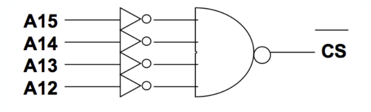

Week 4
IO in microprocessors
Memory-mapped IO
- 메모리의 일부분이 IO를 주고받는 곳처럼 작동
CPU-memory interfaces
Register-based interfaces
Serial communications
Address space
Microprocessors think the everything around them is a just address
External devices are located in the space of address - memory map!
Addressable range and address bus width
- 16bit address → \(2^{16}\) of objects can be identified
Memory map
Address decoding
- Address space with multiple chip devices
Ex) Implementing 64KB memory with 4KB devices
- 8bit data, 16bit address, \(2^{16} = 2^{6}K = 64K\)
- \(64 / 4 = 16 \times 4\)KB RAM are required
How about the address?
- \(4K = 4 \times 2^{10} = 2^{12}\) → 12 bits for byte-wise addressing
- \(64K = 64 \times 2^{10} = 2^{16}\) → 16 bits for byte-wise addressing
Address decoding
How to select a specific device according to the address from the microprocessor?
- Generate chip select signal with a specific combination of address
- How about the selected address space with the logic below?

Memory map

0x000 ~ 0x0FFF까지는 0000 device가 응답


By using demultiplexer,
- We can generate a signal to select a specific devices when we have enough memory space!
What will happen when we use lower 4 bit instead of higher 4 bit?
- Memory map is divided and not continuous.
Raspberry Pi: Memory map

Addresses in ARM Linux are:
- Issued as virtual addresses by the ARM core, then
- mapped into a physical address by the ARM MMU, then
- mapped into a bus address by the ARM mapping MMU, and finally
- used to select the appropriate peripheral or location in RAM
ARM virtual addresses
- Virtual addresses in user mode (i.e. seen by processes running in ARM Linux) will range between 0x00000000 and 0xBFFFFFFF.
- Virtual addresses in kernel mode will range between 0xC0000000 and 0xEFFFFFFF
- Peripherals (at physical address 0x20000000 on) are mapped into kernel virtual address space starting at address 0xF2000000. Thus a peripheral advertised here at bus address 0x7Ennnnnn is available in the ARM kernel at virtual address 0xF2nnnnnn.
Raspberry Pi: Peripheral control registers
Where does it comes? then, where will it go?
- OS-CPU-address/data-peripheral
- Application in user space → IO-mapped files → virtual/physical address translation (MMU) → address/data pins ↔︎ control registers → external peripherals

ARM processor architecture
ARM-v8A multicore structure

Example: Processor pins for memory (Z-80)
Memory interface signals in microprocessor
- address bus
- data bus
- control signals

High-Z
What should the other devices do when they are not selected?
- acts like unconnected
- High-Z in Tri-state buffer

High-Z - high impedance
- 붙어 있는데 붙어있지 않은 거처럼 동작
Example: simple SRAM access cycle

A typical SRAM with
- \(4 \times 1Kbyte\) memory arrays
- 4 bit data \(\times 10\) bit addresses
- Chip select (=Chip enable) and write enable for control signals
What is the relation between the memory size and data/address bus width?
Volatile memory: SRAM